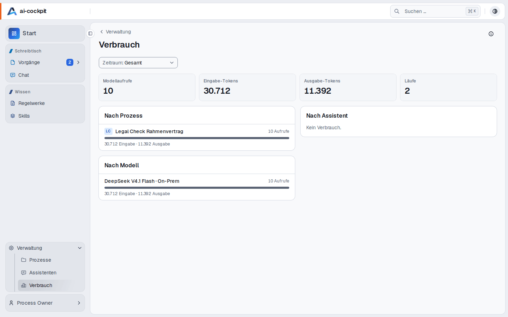

Ergebnis besprechen
Rückfragen zum Ergebnis, Formulierungen für die Verhandlung, Anpassungen vor der Entscheidung – direkt im Vorgang.
Funktionen
Alle Bilder zeigen die laufende Anwendung mit Demodaten.
Vorgänge
Das Board zeigt die offenen Vorgänge aller Prozesse, sortiert nach ihrem Stand. Die Liste enthält auch abgeschlossene Vorgänge und lässt sich nach Prozess, Stand und Text filtern.

Startseite
Die Startseite zeigt, was auf Sie wartet, woran Sie zuletzt gearbeitet haben und in welchen Prozessen Sie einen Vorgang anlegen können.

Prüfergebnis
Jeder Vorgang zeigt oben, wo er steht: seine Stufen von „Neu“ bis „Abgeschlossen“ und was jetzt zu tun ist. Darunter steht, was herausgekommen ist – nach Maßnahmen geordnet. Jeder Befund belegt seine Aussage mit einem wörtlichen Zitat aus dem Dokument. Aus denselben Daten entsteht der Prüfbericht in Ihrer Word-Vorlage.

Regelwerke
Prüfpunkte, Risikomuster und Formulierungsregeln liegen in Regelwerken. Jede Änderung ergibt eine neue Revision mit Autor, Zeitpunkt und Begründung; in Prüfungen wirkt nur, was freigegeben ist.

Verbesserungsvorschläge
Passt eine Regel nicht oder fehlt eine, wird direkt aus dem Befund ein Vorschlag. Er läuft als eigener Vorgang durch die Kuratierung und wird erst nach der Annahme Teil des Regelwerks.

Prozesse
Was der Prozess leistet, wer ihn verantwortet, gegen welche Regelwerke er prüft und was er verbraucht hat – alles auf einer Seite. Wer den Prozess betreut, ändert die Angaben direkt dort.

Modelle
Provider und Modelle werden zentral verwaltet: Endpunkt, Schlüssel und Verbindungstest auf einer Seite. Jeder Prozess wählt sein Modell oder übernimmt den Standard seines Bereichs. Auf welchen Modellen ein Prozess geprüft wurde, ist festgehalten.

Chat
Wählen Sie die Regelwerke aus und stellen Sie eine Frage. Die Antwort stützt sich nur auf deren Einträge und nennt sie als Quelle – mit Link zum Eintrag.

Skills
Ein Skill beschreibt, wann ein KI-Werkzeug ihn nutzen soll, und gibt ihm die Anweisungen dazu. Alle können Skills lesen, kopieren und als SKILL.md herunterladen; wer sie pflegt, bearbeitet sie in einem eigenen Editor.

Verlauf
Der Verlauf eines Vorgangs zeigt jeden Statuswechsel mit Person, Zeitpunkt und Begründung, dazu jeden Lauf des Agenten. Einträge lassen sich weder ändern noch löschen – das verhindert die Datenbank selbst.

Verbrauch
Key-User und Administratoren sehen, wie viele Modellaufrufe und Tokens die Plattform gebraucht hat – nach Prozess, Assistent und Modell, für 7, 30 oder 90 Tage oder insgesamt.

Außerdem
Rückfragen zum Ergebnis, Formulierungen für die Verhandlung, Anpassungen vor der Entscheidung – direkt im Vorgang.
Die Auswahlfelder der Formulare – Vertragsart, Dokumentart und mehr – stellt jedes Unternehmen selbst ein, auch mit Abhängigkeiten.
Jeweils eine eigene Seite: wer sich anmelden darf, wie die Organisation gegliedert ist und was jede Rolle darf.
Mit ⌘K bzw. Strg+K finden Sie Vorgänge, Prozesse, Regelwerke und einzelne Regeln.
Das „i“ neben dem Seitentitel erklärt, wofür die Seite da ist und was ihre Begriffe bedeuten.
Beide Darstellungen sind auf ausreichenden Kontrast geprüft.
Betrieb
Anwendung, Datenbank und Agent-Laufzeit werden als Container ausgeliefert. Modell-Gateway und Dokumentkonvertierung bindet die Plattform nur über ihre Adresse an.
Die Modelle laufen bei Ihnen oder in einer Region Ihrer Wahl; der Kern braucht keinen externen Dienst.
Ein Endpunkt meldet, ob Datenbank, Agent-Laufzeit, Dokumentkonvertierung und Modell-Gateway erreichbar sind.
Datenbankmigrationen laufen beim Start, jedes Image trägt seine Versionsnummer – Sie wissen, was läuft, und können zurück.
Ein Prozess läuft vollständig. Weitere Prozesse und die eigenständige Einrichtung folgen in Stufen.